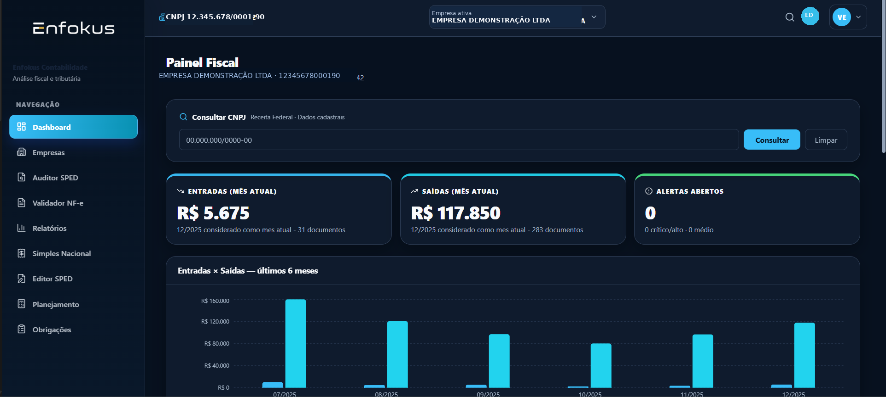
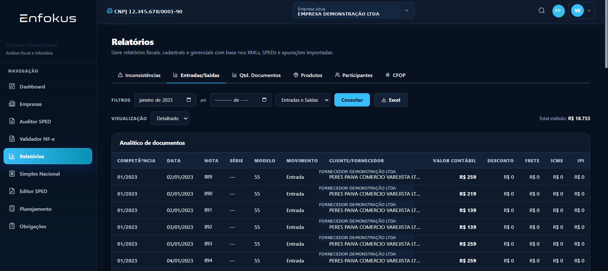
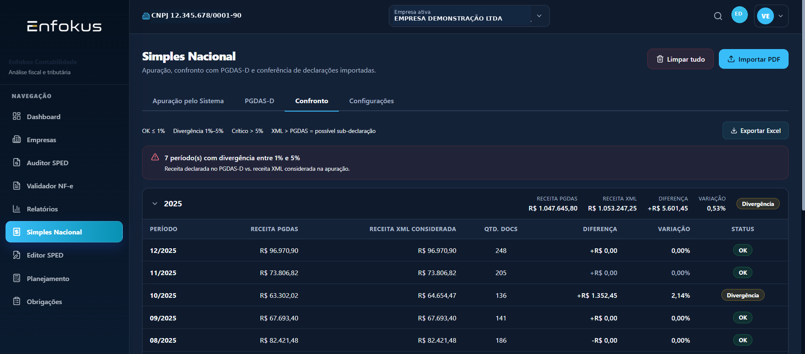
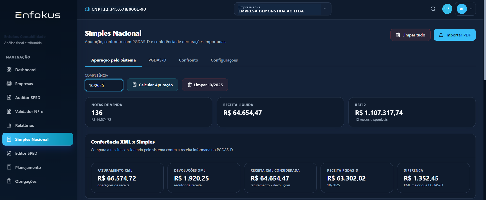
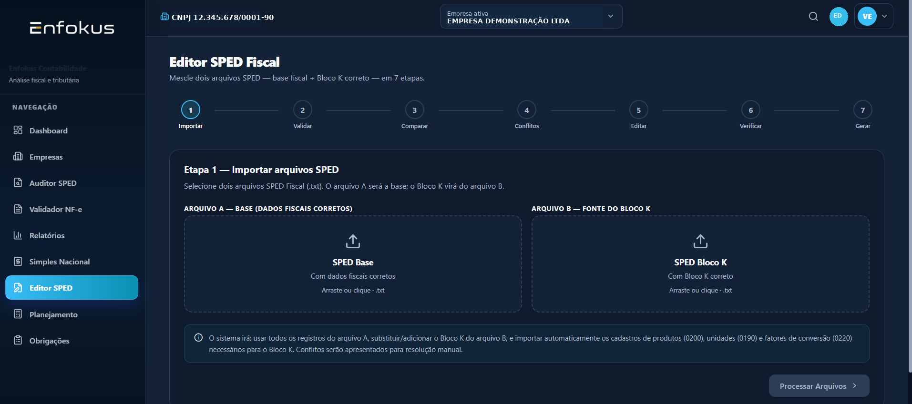

01
Importe com controle
Envie XMLs diretos ou em ZIP, além de SPED Fiscal e Contribuições. A importação valida a empresa ativa para evitar mistura de dados.
Centralize SPED Fiscal, SPED Contribuições, XMLs de NF-e e PGDAS-D. O Enfokus organiza a base, cruza informações e destaca divergências para que seu time investigue o que realmente importa.

Você não precisa abrir planilha após planilha para localizar uma inconsistência. A plataforma conecta informações importadas em uma base operacional para conferência, análise e priorização.
Envie XMLs diretos ou em ZIP, além de SPED Fiscal e Contribuições. A importação valida a empresa ativa para evitar mistura de dados.
Compare documentos e apurações entre SPED Fiscal e Contribuições, confronte receita XML com PGDAS-D e encontre diferenças antes que elas virem problema.
Transforme regras técnicas em alertas, relatórios e exportações para orientar a revisão da equipe e a conversa com o cliente.
O núcleo de auditoria cruza SPED Fiscal e SPED Contribuições, interpreta registros relevantes e reúne pontos de revisão em uma mesma tela.
Importe múltiplos arquivos, execute a análise automática e exporte a documentação da revisão. A plataforma trabalha com documentos, itens C170, CFOP, apurações de ICMS, PIS e COFINS.
Filtre competências, analise entradas e saídas, confira quantidades e valores e exporte a base para trabalhar com segurança nas rotinas do escritório.

A apuração usa a mesma base fiscal dos relatórios. Isso evita leituras desencontradas e mostra, por competência, faturamento XML, devoluções, receita considerada, PGDAS-D e diferença.

Fluxos separados para notas de terceiros e notas próprias, validação de CNPJ, detecção por competência, classificação de itens e organização da base que alimenta os outros módulos.

Fluxo guiado para usar uma base fiscal correta, incorporar o Bloco K de outra fonte, identificar conflitos e gerar um novo arquivo após a conferência.

O núcleo fiscal já está em uso de validação. Os próximos módulos serão construídos sobre a mesma base de dados, com prioridade para os problemas reais dos parceiros fundadores.
SPED Fiscal e Contribuições, XML, relatórios, regras, alertas, Simples Nacional e exportações.
Simulação de cenários, comparação de regimes, grupos econômicos e risco de desenquadramento.
Calendário e controle de entregas, além da evolução gradual dos módulos integrados.
Serão liberados apenas 10 acessos gratuitos para escritórios que realmente queiram testar a plataforma, validar fluxos com dados do dia a dia e enviar feedback direto. Após essa fase, o Founder Access reunirá os parceiros que apoiam o desenvolvimento e acompanham de perto as próximas entregas.